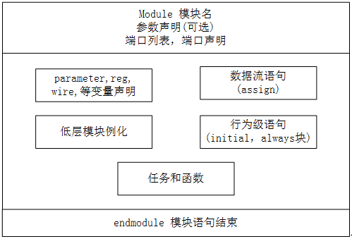
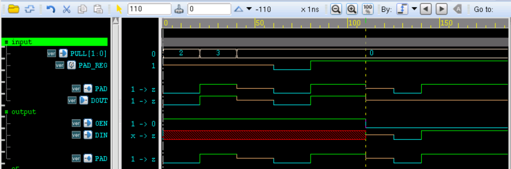

キーワード：モジュール、ポート、双方向ポート、PAD
構造モデリング方式には3種類の記述文がある：Gate（ゲートレベル）インスタンス化文、UDP（ユーザー定義プリミティブ）インスタンス化文、module（モジュール）インスタンス化文である。今回は最もよく使用されるモジュールレベルのインスタンス化文について説明する。
モジュール
モジュールは、Verilog における基本ユニットの定義形式であり、外部とやり取りするためのインターフェースである。
モジュールのフォーマット定義は以下の通り：
module module_name
#(parameter_list)
(port_list) ;
Declarations_and_Statements ;
endmodule
モジュール定義はキーワード module で始まり、キーワード endmodule で終わらなければならない。
モジュール名、ポート信号、ポート宣言、およびオプションのパラメータ宣言などは、設計で使用される Verilog 文（図中の Declarations_and_Statements）の前に記述される。
モジュール内部はオプションの5つの部分から構成される。それぞれ変数宣言、データフロー文、動作レベル文、下位モジュールのインスタンス化、タスクと関数である。下図の通りである。この5つの部分の出現順序や出現位置は任意である。ただし、各種変数は使用前に宣言しなければならない。変数の具体的な宣言位置は問われないが、使用前の位置にあることを保証しなければならない。

これまでのほとんどのシミュレーションコードでは module 宣言が使用されているので、各自で参照されたい。ここでは具体的な例は挙げない。次のポートの説明で、詳細なシミュレーションを行う。
ポート
ポートはモジュールと外部がやり取りするためのインターフェースである。外部環境から見ると、モジュール内部は不可視であり、モジュールの呼び出しはポート接続によってのみ行われる。
ポートリスト
モジュール定義にはオプションのポートリストが含まれる。通常、型なし・ビット幅なしの信号変数をモジュール宣言内に列挙する。以下は PAD モデルのポートリストである：
module pad(
DIN, OEN, PULL,
DOUT, PAD);モジュールが外部環境とやり取りしない場合は、ポートリストを宣言する必要はない。例えば、以前シミュレーションしたときの test.sv ファイル内の test モジュールは、具体的なポートを宣言していなかった。
module test ; //直接分号结束
...... //数据流或行为级描述
endmodule
ポート宣言
(1) ポート信号がポートリストに列挙された後、モジュール本体内で宣言することができる。
ポートの方向に応じて、ポートタイプは3種類ある：入力（input）、出力（output）、双方向ポート（inout）である。
input、inout 型は reg データ型として宣言できない。reg 型は数値を保持するためのものであり、入力ポートは接続されている外部信号の変化を反映するだけで、これらの信号の値を保持できないからである。
output は wire または reg データ型として宣言できる。
上記の例の pad モジュールのポート宣言は、module 本体では次のように表すことができる：
例
input DIN, OEN ;
input [1:0] PULL ; //(00,01-dispull, 11-pullup, 10-pulldown)
inout PAD ; //pad value
output DOUT ; //pad load when pad configured as input
//ポートデータ型宣言
wire DIN, OEN ;
wire [1:0] PULL ;
wire PAD ;
reg DOUT ;
(2) Verilog では、ポートは暗黙的に wire 型変数として宣言される。つまり、ポートが wire 属性を持つ場合、ポート型を wire 型として再度宣言する必要はない。ただし、ポートが reg 属性を持つ場合は、reg 宣言を省略することはできない。
上記の例のポート宣言は、次のように簡略化できる：
例
input DIN, OEN ;
input [1:0] PULL ;
inout PAD ;
output DOUT ;
reg DOUT ;
(3) もちろん、信号 DOUT の宣言は完全に1つの文にまとめることができる：
output reg DOUT ;
(4) ポートを宣言する、より簡潔で一般的な方法がもう1つある。module 宣言の時点でポートとその型を列挙する方法である。reg 型ポートは module 宣言時または module 本体内で宣言する。例えば、次の2つの書き方は等価である。
例
input DIN, OEN ,
input [1:0] PULL ,
inout PAD ,
output reg DOUT
);
module pad(
input DIN, OEN ,
input [1:0] PULL ,
inout PAD ,
output DOUT
);
reg DOUT ;
inout ポートのシミュレーション
inout ポート型を含む pad モデルをシミュレーションする。pad モデルの完全なコードは以下の通り：
例
//DIN, pad driver when pad configured as output
//OEN, pad direction(1-input, o-output)
input DIN, OEN ,
//pull function (00,01-dispull, 10-pullup, 11-pulldown)
input [1:0] PULL ,
inout PAD ,
//pad load when pad configured as input
output reg DOUT
);
//input:(not effect pad external input logic), output: DIN->PAD
assign PAD = OEN? 'bz : DIN ;
//input:(PAD->DOUT)
always @(*) begin
if (OEN == 1) begin //input
DOUT = PAD ;
end
else begin
DOUT = 'bz ;
end
end
//use tristate gate in Verilog to realize pull up/down function
bufif1 puller(PAD, PULL[0], PULL[1]);
endmodule
testbench コードは以下の通り：
例
module test ;
reg DIN, OEN ;
reg [1:0] PULL ;
wire PAD ;
wire DOUT ;
reg PAD_REG ;
assign PAD = OEN ? PAD_REG : 1'bz ; //
initial begin
PAD_REG = 1'bz ; //pad with no dirve at first
OEN = 1'b1 ; //input simulation
#0 ; PULL = 2'b10 ; //pull down
#20 ; PULL = 2'b11 ; //pull up
#20 ; PULL = 2'b00 ; //dispull
#20 ; PAD_REG = 1'b0 ;
#20 ; PAD_REG = 1'b1 ;
#30 ; OEN = 1'b0 ; //output simulation
DIN = 1'bz ;
#15 ; DIN = 1'b0 ;
#15 ; DIN = 1'b1 ;
end
pad u_pad(
.DIN (DIN) ,
.OEN (OEN) ,
.PULL (PULL) ,
.PAD (PAD) ,
.DOUT (DOUT)
);
initial begin
forever begin
#100;
if ($time >= 1000) $finish ;
end
end
endmodule // test
シミュレーション結果は以下の通り：

シミュレーション結果の分析は以下の通り：
PAD の方向が input でドライブがない場合、pull 機能は PAD の値によって確認できる。
最初の60nsの間、PAD のドライブ端 PAD_REG は z であり、ドライブがないと見なせる。したがって、開始時は PULL=2 でプルダウンされ、PAD 値は 0 になる。20ns では PULL=3 でプルアップされ、PAD 値は 1 になる。
40ns では PULL=0 で pull 機能がなく、PAD 値は入力として z になる。
60ns〜100ns の間、PAD のドライブ端 PAD_REG が正常にドライブを開始する。このとき、PAD は PAD_REG に直接接続されているのと同等であるため、PAD 値はそのドライブ値と一致する。
上記の分析では、PAD 方向はすべて input であり、すべての出力端 DOUT は PAD 値と一致する。
PAD 方向が output の場合、すなわち 120ns で OEN=0 のとき、PAD 値は入力端 DIN の値と一致する。
クリックしてノートを共有
<p style="font-size:14px;">ノートはこの記事の内容を拡張したものである必要があります！</p><br> <p style="font-size:12px;"><a href="../tougao.html" target="_blank">記事の投稿は、こちらをクリックしてください</a></p> <p style="font-size:14px;"><a href="./runoob-user-test-intro.html" target="_blank">登録招待コードの取得方法</a></p> <h3 class="text-muted"><i class="fa fa-info-circle" aria-hidden="true"></i> ノートを共有する前に<a href=".." class="runoob-pop">ログイン</a>が必要です！</h3> <p><a href="./runoob-user-test-intro.html" target="_blank">登録招待コードの取得方法</a></p>